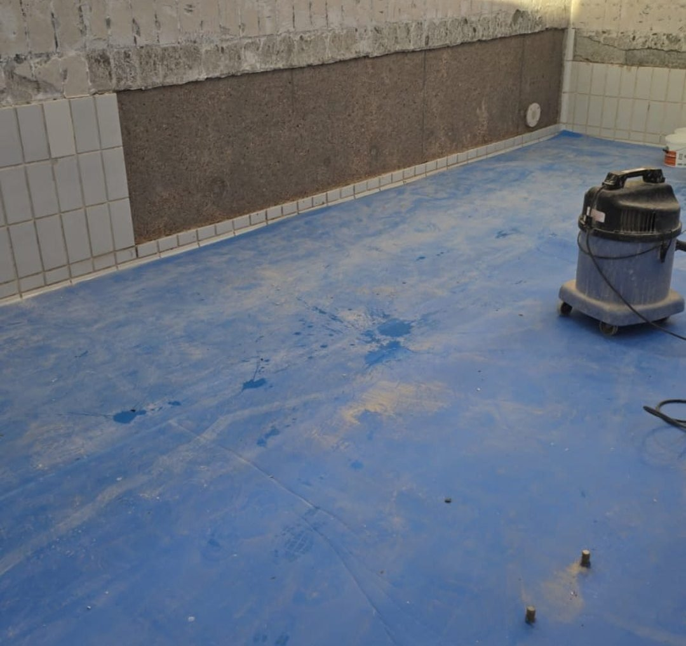
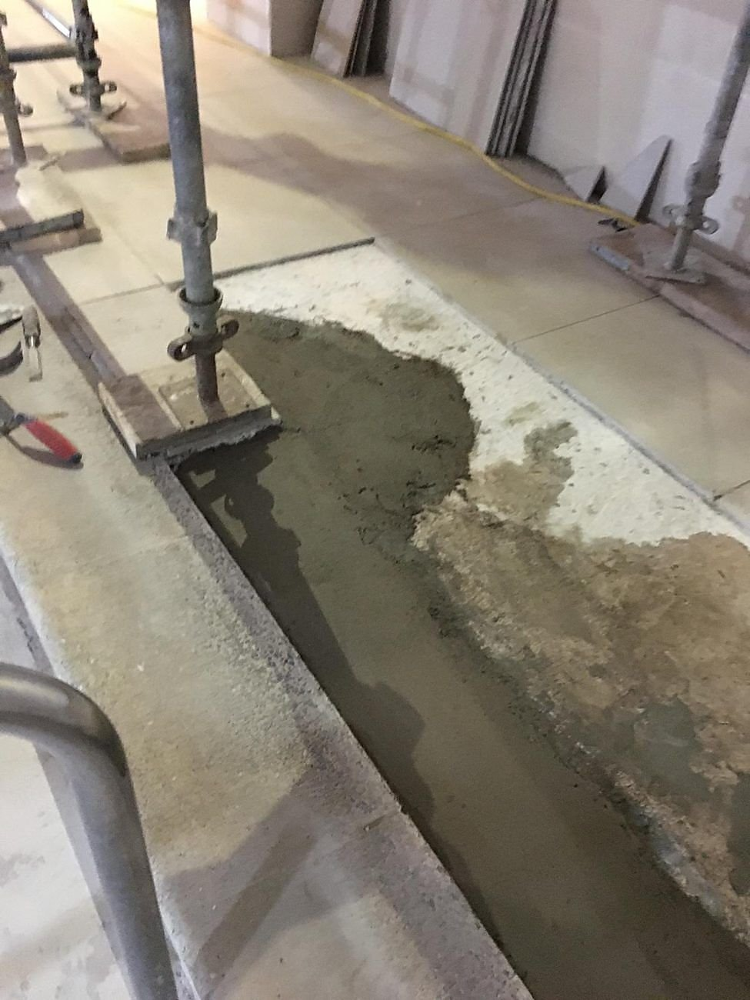

Screeding, levelling and wall preparation
Floor screeds, self-levelling, render repairs and tanking, so every surface is flat, sound and watertight before tiling.
Overview
Every tile follows the surface beneath it. We prepare floors and walls so they are flat, sound and watertight before a single tile goes down, then tile them ourselves, so one team is accountable from base to finish.

What we do
Floor screeding
Sand and cement screeds to bring floors to level, or to falls where water must run to a drain or channel.
Self-levelling
Primed, poured self-levelling compounds for a flat, smooth base over concrete and existing floors, essential under large-format porcelain.
Render repairs to walls
Hollow, cracked or loose render cut back to a sound background and re-rendered flat, so new wall tiles bond and stay put.
Tanking and waterproofing
Waterproofing systems applied to showers, changing rooms and wet areas before tiling, so water stays where it belongs.
Flat first
Large tiles and busy floors show every dip and ridge. A true base keeps every tile perfectly flush.
Dry before tiling
Screeds and renders need time to dry. We follow the manufacturer's guidance and do not tile onto a wet base.
Sound background
We tap-test and cut back anything hollow or loose. Tiling over a weak base only hides the problem for a while.

How we work on site
Preparation is where a tiled finish is won or lost, so it is never rushed.
- We keep dust down with vacuums and dust extractors and clean up as we go.
- We protect finished work and surrounding areas, and leave the site clean and tidy every day.
- We work evenings, nights and weekends when a programme or opening hours call for it.
- Both of us are enhanced DBS checked, hold CSCS cards and are trained in COSHH, manual handling, abrasive wheels and asbestos and silica awareness.
See our health and safety approach.
Common questions
What is the difference between screed and self-levelling?
A screed is a sand and cement layer laid by hand, used to build up a floor or form falls to a drain. Self-levelling compound is poured and flows flat, giving a smooth finish over a sound base.
Can you re-render a wall before tiling it?
Yes. We cut out hollow or failed render back to a sound background and re-render it flat, ready for tiling.
Do showers and changing rooms need tanking?
Areas that get wet should be waterproofed before tiling. Tiles and grout are not waterproof on their own.
How long before you can tile onto new screed or render?
It depends on the product, the thickness and the conditions. Rapid-drying products can often be tiled within days; traditional screeds take longer. We follow the manufacturer's times.
Put your next project in trusted hands.
Share the details and we'll return a clear, itemised price.